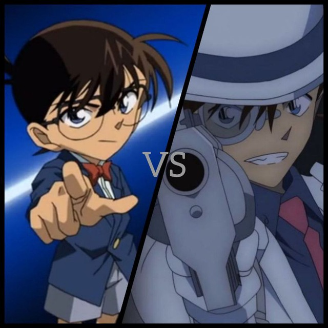

In 2023, the channel was created by
Ahmed Mohamed Eltaiary In that time,
the movie 26 was almost out as a translated version,
so, he went to find an unoffical translated version
And he found it! After that he posted it on the channel. Then he started posting art and other side things.
The second channel logo

Later in 2024, The movie 27 was published in the cenima.
So, the owner went to search for the movie in the cenima version. And he found it!
later through the year, the owner felt that there are not enough subscribers though he works hard,
so he decided to schedule for every specific time some uestions so they can have fun!
then subscribers started increasing from that time!
The third channel logo
From 2024 to 2025, the owner decided to make competitions and other things
though there was no enough subscribers
so the owner decided to think with a different way and he went to different conan groups and started inviting
them to his group!
In addition, other than the comptitons he made he started writing cases for them! And thats the history of
the "Detective Conan News"channel
and one day we will go through the history of our other channels.
Are you convinced now to subscribe in my channel? here is the link subscribe now
In December 1, 2023 I decided to create a movie channel
because I thought that if I sent the movies on the main channel (Detective Conan News)
the channel posts will be lost. At the beginning of my channel,
the subscirbers where like between 8 to 10 subscribers, and thats how any channel begins,
but I kept inviting people till in monday, September 23,
2024 the channel started rising at the rate of subscriber a day.
But at October 24 it stabled for a while where at that time it got to 65 followers.
In December 11 it started increasing to get to what we got now which is 93 subscribers!!!
Do you want to support us?
Subscribe now!!!
Pop-quiz
Question 1: When did the channel start?
Question 2: Whats the purpose of the channel?
Question 3: How much subscribers did the channel start with?
In December 3, 2023
I decided to make the episodes channel and for the same purpose as the movies channel
which is to avoid the lost of our main channel posts. But I preferred
to ask our subscribers for there opinion and 16 out of 17 votes voted yes so according to that I decided to create the episode channel.
But don't think that the current channel is the one that I made at that time .
In December 13, 2023 my channel was blocked by telegram, banned , and deleted.
so I made another channel which is the channel that you can see now. About subscribers growth,
the growth was too slow, though it wasn't the only slow subscriber growth channel,
but it was too slow due to the channel getting banned.
Are you convinced to subscribe now?
Click here!
Pop-quiz
Question 1: How did I decide to make the episode channel?
(hint: by taking the subscirbers opinion/by my own opinion)
Question 2: When did I decide to create the episodes channel?
Question 3:
How much days is the difference between the creation of the episodes channel and the movies channel?
stories competitions and other competitions//مسابقات القصًص ومسابقات أخرى
In January 1, 2024
I decided to create a story channel for people who like to read stories and/or write them.
At the beginning of the channel, probably after 3-4 days of its creation, 2 people submitted there stories,
but after that the channel never received a story and till now the only 2 stories that where written by the fans are posted there. From that time the channel was left empty without any posts, but later I started posting questions/competitions related to conan, and the first name for the channel was " Stories competitions and others " then it was updated to " stories competitions and other competitions " then it was updated to the current title. while, the subscirbers growth was too slow due to the lack of posts but the channel continued and it still exists till now and has 26 subscribers! Support us by subscribing now!
Pop-quiz
Question 1: How much names/titles did the stories channel have?
Question 2: How much stories made by the fans where uploaded on the channel from its creation?
Question 3: What was the actual purpose for the creation of the channel?
Detective Conan Manga//مانجا المحقق كونان
In September 11 I created the Manga channel
for the same purpose as the movie and the episode channels which is to prevent the loss of the main channel posts.
At the beginning of the channel there where only like 4 subscribers 3 from the main channel 1 from outside then later
after I posted all the Manga it jumped from 4-5 subscribers to 190 subscribers!!!
which almost as much as our main channel!!!
Are you sure you still don't want to subscribe?
Subscribe Now!!!
Pop-quiz
Question 1: How did the Manga channel start?
Question 2: How much subscribers does it currently have?
Question 3: How much outside subscribers subscribed at the beginning of the channel?
End of Questions
Final Pop-quiz
Question 1:How much channels do we have? (Including deleted ones)
Question 2: What's the relation between the movie channel and the stories channel?
Question 3: What do you think the purpose of the main channel?
In 2024 November 12, the channel was created by Olat.
The first best story till now was published in his channel and is called
"Tsuki's light". Cases where published too, all ranged as hard difficulty.
The channel's group was made with the channel.
People solve who solve the cases can help each other in the group
and whoever solves it right his name gets announced on the channel!
Subscribe now!!!
Anime world channel history
A channel that supports my channel. The channel was created in: 10/11 (October)/2025.
Subscribe now
Detective conan is the main character in an anime called in american
"Case Closed" while its called in Japan
"Detective Conan" (名探偵コナン, Meitantei Conan). This anime was written by Goshwa Aoyama,
which was inspired by the book "Sherlock Holmes". The anime started in January 2, 1996.
The character is a high school detective named Shinichi Kudo who, after being poisoned, is transformed into a child.
He takes on the alias of Conan Edogawa while continuing to solve cases in order to find the people responsible for his transformation and
return to his original body.
Detective Conan Plot
Shinichi Kudo, a 17-year-old high school student, is a brilliant detective known for his sharp reasoning and observational skills.
He often helps the police with their investigations and has become famous in Japan for solving difficult cases.
One day, while investigating a mysterious case with his childhood friend Ran Mouri,
Shinichi is attacked by members of a secret criminal organization known as the Black Organization.
The members of this organization force him to swallow a mysterious poison, APTX 4869, hoping to kill him.
However, instead of dying, Shinichi's body shrinks, transforming him into a child.
With his physical appearance now that of a 7-year-old, he adopts the alias Conan Edogawa to hide his identity.
He keeps his new identity a secret from everyone, including his friends and family.
Conan's New Life:
After his transformation, Conan takes refuge with Ran Mouri, who is unaware of his true identity.
Ran’s father, Kogoro Mouri, is a bumbling private detective, and Conan often helps him solve cases by secretly giving him clues.
Conan uses his sharp skills to solve mysteries while maintaining his cover as a child.
Conan’s primary goal is to track down the Black Organization and find the antidote to return to his original form.
However, his investigation is complicated by the fact that the organization is powerful, elusive, and dangerous.

 which was inspired by the book "Sherlock Holmes". The anime started in January 2, 1996.
which was inspired by the book "Sherlock Holmes". The anime started in January 2, 1996.